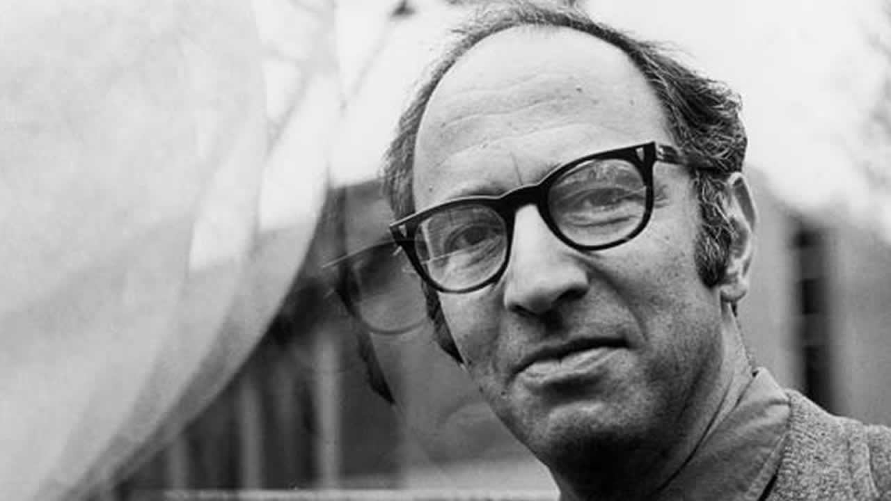
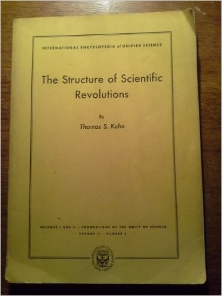

Todo lo que nunca quiso
saber sobre la ciencia
(Ni se atrevió a preguntar)

—That’s science. I don’t believe in science. Science is an intellectual dead end. You know, it’s a lot of little guys in tweed suits and cutting up frogs on foundation grants, and…
—Oh, I see. You don’t believe in science, and you also don’t believe that political systems work, and you don’t believe in God, huh?
—Right.
—So, then, what do you believe in?
—Sex and death. Two things that come once in my lifetime. But at least after death you’re not nauseous.
Qué se dice que es la ciencia
Cuando a alguna afirmación, razonamiento o investigación se le denomina «científico», se prebende dar a entender que tiene algún tipo de mérito o una clase especial de fiabilidad
Chalmers, Alan; Qué es esa cosa llamada ciencia.
Qué se dice que es la ciencia
La ciencia es una empresa sistemática que construye y organiza el conocimiento en la forma de predicciones y explicaciones pasibles de ser puestas a prueba acerca del universo.Fuente: Wikipedia
Qué se dice que es la ciencia
- La ciencia se basa en lo que podemos ver, oír, tocar, etc.
- Las opiniones y preferencias personales y las imaginaciones especulativas no tienen cabida en la ciencia.
- Las teorías científicas se derivan, de algún modo riguroso, de los hechos de la experiencia adquiridos mediante la observación y la experimentación.
- El conocimiento científico es conocimiento probado.
- La ciencia es objetiva.
- El conocimiento científico es conocimiento fiable porque es conocimiento objetivamente probado.

¿Cómo se consigue eso?
Método científico

Aristóteles

Aristóteles
- La observación cuidadosa, no meramente el registro de observaciones, era el punto de partida.
- No creía en la experimentación.
- Requería, además, una manera de hilar las observaciones para inferir más allá de las mismas.
Hay dos direcciones para proceder en nuestros métodos de investigación:
Inductivo vs. Deductivo
Newton
Newton
hypotheses non fingo(no compongo una hipótesis)
El científico no debería inventar sistemas, sino inferir explicaciones a partir de observaciones
Siglo XX
- Positivismo lógico
- H-D como lógica de confirmación
- Popper y el falsacionismo
1. Positivismo
(Concepción heredada)
Avances en lógica y probabilidad ilusionaron con elaboradas resconstrucciones de teorias y métodos empíricos.
The Logical Structure of the World, Rudolf Carnap (1928)
- Axiomatización de teorías
- Contexto de descubrimiento y justificación
- Términos teóricos y observacionales
Dificultades
- Observación cargada de teoría
- Axiomatización. No todas pueden ser axiomatizables.
- Inductivismo. Múltiples teorías dan cuenta de una observación.
2. H-D como lógica de confirmación
Una hipótesis es confirmada por sus consecuencias verdaderas.
- Si la hipótesis está en conflicto con observaciones, puede ser rechazada de inmediato.
- Otras necesitan ser testeadas experimentalmente:
- Si la predicción no se da, entonces H es rechazada.
- Si la predicción si se da, no quiere decir que H se sostenga.
3. Popper y el falsacionismo
Es similar al H-D; los científicos deducen consecuencias observacionales de sus hipótesis y las someten a prueba.
- Para Popper no importa la cantidad de evidencia confirmatoria a favor de H, nunca podemos estar seguros de que sea verdadera.
- Lo importante no era probar la veracidad, sino eliminar las posibles instancias en la que la hipótesis fuera falsa.
El fin del método

El fin del método
- Todas las dificultades (y otras) fueron haciendo evidente que era necesario otro enfoque para mirar la actividad científica.
- Una mirada más empírica, que vea qué hacen los científios en sus campos.
Prácticas científicas

Otras miradas sobre la actividad científica
- Kuhn
- Feyerabend
- Sociología de la ciencia
Thomas Kuhn
La estructura de las revoluciones científicas

Giro historicista
- La historia de la ciencia no es meramente un repositorio de anécdotas.
- El desarrollo de la ciencia se da en fases.
- Cada fase tiene sus propias "reglas de juego".
Kuhn
Consecuencias ¿inesperadas?
La acumulación de anomalías pone en crisis al paradigma y éste cambia.
- El cambio de paradigma puede hacer que los métodos y los valores de cada comunidad.
Paul Feyerabend

Against Method

"Anarquismo epistemológico"
Feyerabend
Analiza los "mitos" de la historia de la ciencia
- Galileo dependía tanto de la retórica y la persuasión como de la razón y la demostración.
- Muestra como hay otros valores (estéticos) que entran en juego, no exactamente racionales.
Feyerabend
- Cualquier restricción que le pongamos a la ciencia afecta la capacidad que tiene de conocer el mundo.
- Todo vale
Sociología de la ciencia
David Bloor
Programa fuerte
Veían una asimetría:
- Los aciertos eran explicados racionalmente, pero...
- Los fallos eran explicados por razones "sociológicas".
Programa fuerte
Cuatro elementos clave:
- Causalidad: Examina las condiciones que producen aseveraciones sobre el conocimiento.
- Imparcialidad: respecto a la veracidad o falsedad, racionalidad o irracionalidad, éxito o fracaso.
- Simetría: Se usa el mismo tipo de explicaciones para éxitos o fracasos de manera indistinta.
- Reflexividad: El programa fuerte también se aplica a sí mismo.
Y... ¿Entonces?
- Hablar hoy de "método científico" es algo desactualizado.
- Métodos
- Hay una compleja interacción entre conocimientos obtenidos, fenómenos para explicar, comunidad científica que chequea y factores sociológicos, políticos y económicos.
- Para la filosofía de la ciencia, es más interesante ver la ciencia como proceso que como producto (ver solamente las teorías, leyes o modelos).